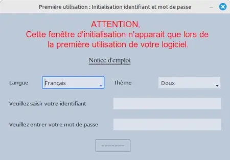
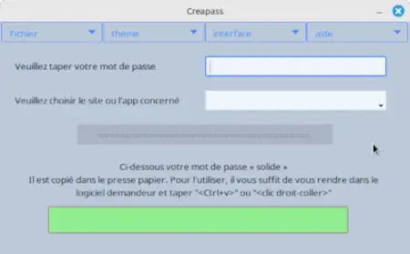
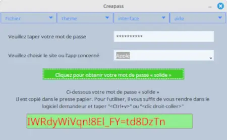
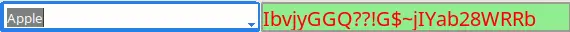
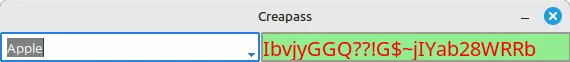

1 - Initialization
When you launch Creapass for the first time, you will see this window:

Figure 1: Initialization window
The software has been designed to be used without a mouse (it's easier and faster, but the mouse is still there). The active area is surrounded by a blue frame; pressing the “Enter” key validates and automatically moves to the next area.
WARNING: Your username and password are stored in encrypted form (digital fingerprint). It is therefore IMPERATIVE THAT YOU REMEMBER THEM, as they cannot be recovered.
→ See our tips for choosing a good username and password ←
After entering this information, the window will change to:

Figure 2: Initialization validation
2 - Initial use
After initialization, this window will appear at startup:

Figure 3: Main window
You must enter your password to access the features. Then:
- Select or enter a site/application
- Confirm with Enter
- The generated password is automatically copied to the clipboard

Figure 4: Password generated
3 - Mini interface
For more discreet use, activate the mini interface via the menu.
Please note that this menu option is only accessible after validating the password.

Figure 5: Activating the mini interface
The mini interface will then appear, along with an icon in the area next to the clock:
Right-clicking on the icon will bring up a menu.

Figure 6: Mini interface
If you need to move this window, press “Alt-m” to display the traditional system bar

Figure 6: Movable mini-interface
Tip: After selecting the site, press Enter to generate a password, then Enter again to clear and prepare for a new generation.
If you have chosen to open directly in reduced mode, you will be asked for your password.
Please note that this assumes you are familiar with the software and that this is your usual working mode; you will no longer have access to the “language” and “theme” options.
Help and shortcuts
- F1: Contextual help
- Ctrl+Q: Exit the application
- Ctrl+V: Paste the generated password
- Alt+m: Show/hide the system bar